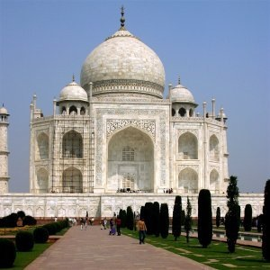

Project 2 - Fun with Filters and Frequencies
Filip Malm-Bägén

Introduction
This project explores using frequencies to process and combine images. The project shows the process and result of sharpening images by emphasizing high frequencies, extracting edges with finite difference kernels, creating hybrid images by blending high and low frequencies from different images, and blending images at various frequencies using Gaussian and Laplacian stacks.
Finite Difference Operator
Approach
To compute the partial derivatives in the x and y directions of the
"cameraman" image, I first created finite difference kernels as
Numpy arrays: D_x = np.array([[1, -1]]) and
y = np.array([[1], [-1]]). Using
scipy.signal.convolve2d with mode='same',
I convolved the image with these kernels to obtain the partial
derivative images, which represent the changes in pixel intensity in
the x and y directions, respectively. Thereafter, I computed the
gradient magnitude image using the formula
np.sqrt(partial_derivative_x ** 2 + partial_derivative_y **
2), which combines the two partial derivatives to highlight the edge
strength at each pixel. To create an edge image, I applied a
threshold to the gradient magnitude image,
Threshold = 0.2. Selecting the threshold value through
trial and error to balance noise suppression with the visibility of
real edges.
Result
Derivative of Gaussian (DoG) Filter
First, the cameraman is blurred using a Gaussian filter, made using
cv2.getGaussianKernel with kernel size
6 and sigma 1.0. Afterwards, the image
gradient magnitude of the blurred image is computed using the same
method as in the previous section. Finally, the blurry gradient
magnitude image is thresholded to create an edge image. The
threshold value was set to 0.05 in order to correspond
to the result of the previous binarized cameraman.
There is a clear difference in the final result. The most obvious one is that the edges are thicker for the binarized edges and rounder that previously.


The two images are essentially the same. If looking closely, the grass and other small details differ, but the overall image is the same.
Image "Sharpening"
To sharpen an image, the image was first convolved with a Gaussian
filter, to filter out the high frequencies, which resulted in a
blurry image. The high frequencies were then extracted by
subtracting the blurry image from the original image. Finally, the
high frequencies were added back to the original image to create a
sharpened image, using
sharpened_img = img + alpha * details, where
alpha is a constant sharpening factor.
Taj Mahal
The Taj Mahal image was sharpened using a sharpening factor of
0.75. As seen, the sharpened image has more defined
edges and details compared to the original image.

Camera Obscura
A couple of weeks ago, I had the opportunity to visit the "Camera
Obscura & Holograph Gallery" in San Francisco. It was very
interesing to see how the camera obscura works and how it can be
used to create images. Unfortunately, the resulting image lacked
sharpness... Luckily, I now know an algorithm to sharpen images! I
used alpha = 6.0 and the resulting image is sharper
than ever. The edges around the horizon and windows are much more
defined, but the image is also noisier.
Swedish Midsummer 🇸🇪
In Sweden, Midsummer is the biggest holiday of the year. We eat a
lot of pickled herring and strawberries, and we celebrate all day
and all night, usually up until the sun rises again. I captured this
image of my friends dancing at midnight, but due to the lack of
light, the image turned out blurry... But by sharpening the image
with alpha = 2.0, the image is now a bit clearer. The
image lacks information to begin with (I can't enhance something
which does not exist), but the edges are more defined than before.
Lena
Finally, the Lena image was first blurred using a Gaussian filter
with kernel = 15 and sigma = 2.0.
Thereafter, I sharpened the image using alpha = 4.0,
with the ambition to make the sharpened image look like the original
image. The sharpened image looks somewhat similar to the original
image. As a measure of similarity, I computed the mean squared error
(MSE) and the Structural Similarity Index (SSIM) between the
original and sharpened images. MSE measures the average squared
difference between the two images. A lower MSE indicates a closer
match between the images. SSIM is a perceptual metric that measures
the similarity between two images. A higher SSIM indicates a closer
match between the images and 0 indicates no similarity. The MSE and
SSIM values were 19 766 and 0.0046,
respectively. The values indicates that the sharpened image is not
similar to the original image at all. This might happen because
sharpening can create new edges and artifacts, making the pixel
values differ a lot. As a result, the metrics show low similarity,
even if the image looks somewhat similar to you.

This webpage design was partly made with generative AI models.